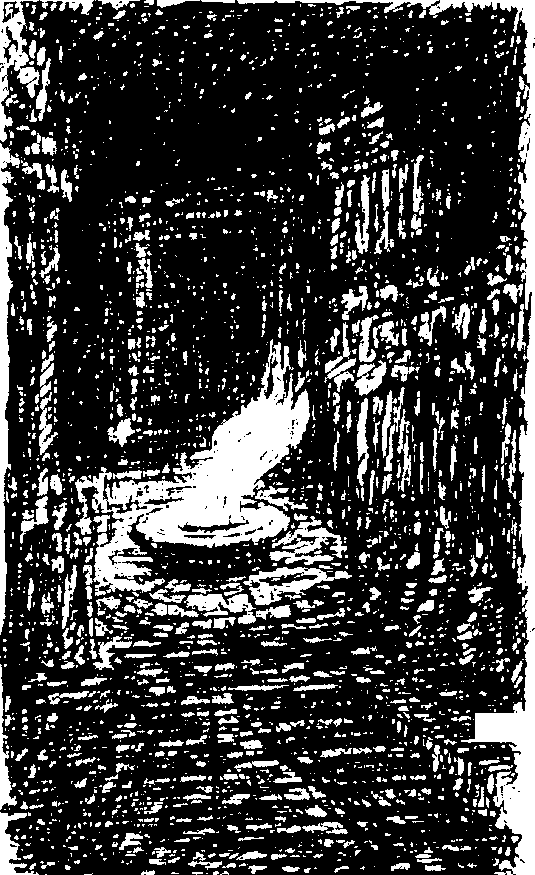

1
Daha önce hiç hissetmediğim bir hafiflikle dolmuştum. İçimden bayık, tatlı bir koku yükseliyordu. Hislerim tamamen biçim değiştirmişti. Hayatım küçük, titrek bir bilinç parıltısından farksızdı. Yoksa uyuyor muydum? Uyanık mıydım? Ölmüş müydüm? Uzaklardan yankılanarak gelen çığlıklar duydum; yüksek sesle çalınan çatlak notaları andırıyordu. Bir horoz öttü ve kulaklarıma basit bir koral çalan sessiz bir org sesi geldi. Başımı kaldırdım ve aşağılarda tanıdık bir Alman kır manzarası, küçük bir dağ köyü gördüm. Akşam yaklaşmaktaydı. Org sesi, küçük bir kilisenin açık kapısından geliyordu. Erkek çocuklar karları yumuşamış köy sokaklarında kızaklarını çekiyor, parlak renkli geniş şallara sarınmış kadınlar kiliseden dışarı çıkıyordu. Başları eğik insanlar, uçmasınlar diye Üzerlerine taşlar yerleştirilmiş tahta çatıların geniş saçaklarının altında duruyorlardı.
Birden her şeyi tanıdım. Burası çocukken yaşadığım köydü. Herkesi tanırdım ve neşeli bir şaşkınlık içinde oradaki iki kişinin ebeveynlerim olduğunu fark ettim. Babam her zamanki kahverengi kürk şapkasını takmıştı. Gördüğüm insanların çoğunun aslında ölmüş oldukları gerçeğine hiç şaşırmamıştım. Bu geçmişe dönüş anına katılmaya hevesliydim, ama tek bir kasımı bile kımıldatamıyordum. Üzerinde sıkı sıkı giyinmiş insanların hareket ettiği donmuş göle doğru uçan birkaç kuzgun gördüm. Sonra her şey soldu, donuklaştı ve yok oldu.
Artık karanlıktaydım ve hiçbir şey göremiyordum. Org sesi tüm benliğime öylesine yayılmıştı ki onun armonileri içinde yaşadığımı hissettim. Artık daha zengin akorlar ekleniyordu, ta ki müzik aniden kesilene dek.
Pearl her zaman olduğu yerdeydi. Patera Saray’dan çıktı. Öyle derin bir nefes aldı ki sesi bana kadar geldi. Sonra gerindi ve uzamaya, daha da uzamaya başladı. Başı şimdiden benim hizama gelmişti. Saray’ı ayak taburesi olarak kullanabilirdi. Giysileri yırtıldı ve üzerinden düştü. Uzun, dalgalı bukleleri yüzünü örtüyordu. Dev ayakları sokakları çimen gibi çiğnedi, istasyona eğildi, eline bir lokomotif aldı ve ağız mızıkası çalar gibi üfledi. Ancak her yöne doğru büyümekteydi ve birkaç saniye içinde bu oyuncak kendisine çok küçük geldi. O da Büyük Kule’yi kopardı ve kocaman borazan sesleri gökyüzünde patlarcasına çınladı. Çıplak bedeni bakılmayacak derecede korkunçtu. Daha da müthiş boyutlara ulaştı ve altından bir granit damarının bağırsak gibi sarktığı bir yanardağı kopardı. Bu devasa çalgıyı dudaklarına götürdü ve gürleyerek çıkan yankılarla evreni titretti. Dimdik durdu. Vücudunun üst kısmı bulutların içinde kayboluyordu, eti sanki dağlardan yapılmış gibiydi. Nefretle dolu bir hali vardı. Uzaklarda bir yere eğildini gördüm. Kuş sürüleri uzun saçlarına dolanıyordu. Baldırlarına bile gelmemesine rağmen taşıp her yanı sellere boğan bir denizde yürümeye başladı. Dev elleriyle suyun dibini taradı, gemiler ve kıvranan deniz canavarları yakaladı, hepsini ezdi ve uzaklara fırlattı. Dağları ayaklarıyla çamur kütleleri gibi ezdi ve ayak izlerinin içine büyük nehirler döküldü. Her şeyi yok etmeye kararlıydı. Her yana, en uzaktaki dağ kulübelerine bile kaynar idrarını fışkırttı, şaşkın insanları haşlayıp öldürdü. Sarımsı-gri sellerin içinden yürüdü. Vücudu dumanların oluşturduğu bulutlarla çevrelenmişti. Yumruklarına doldurup millerce uzağa fırlattığı insanlar, ceset sağnağı halinde toprağa düştü. Sonra doğudan batıya doğru uzanan büyük bir dağ silsilesi hareket etmeye başladı. Bunun, uyumakta olan Amerikalı olduğunu gördüm. Patera kendini boylu boyunca düşmanının üzerine attı. İçinde güreştikleri deniz, ev büyüklüğündeki dalgalarla çalkalandı. Oysa ben kendi kaderimin avucunda bulunduğumu biliyordum ve hareketsiz durdum.
Göz alabildiğine bir kan okyanusu uzanıyordu. Mor renkli sıcak dalgalar, uçlarındaki pembe köpükler ayaklarıma varana dek yükseldi. Mide bulandırıcı dumanlar burnuma doldu. Kırmızı deniz geri çekildi ve gözlerimin önünde çürüdü. Kan yoğunlaştı, karardı ve kimi yerlerinde gökkuşağına benzer renkler oluştu. Yapışkan sıvı kimi zaman iki yana ayrıldı ve etrafa katlanılmaz bir koku yayan yumuşak dışkıyla kaplı deniz tabanını ortaya çıkardı.
Patera ve Amerikalı birbirlerine sarılarak şekilsiz bir dev haline geldiler, Amerikalı tamamen eriyip Patera’yla kaynaştı. Organları birbirinden ayırt edilmek için aşırı büyük olan canavar yerde yuvarlanıp debelendi. Şekilsiz yığın, her kalıba girer bir hal alıyordu. Üzerinde milyonlarca değişken, küçük yüzcükler oluştu. Aynı anda konuşuyor, şarkılar söylüyor, bağırıyorlardı. Sonra yeniden içeri çekildiler. Derken canavar sakinleşti ve dev bir top gibi Patera’nın kafasını andıracak şekilde toparlandı. Kıta büyüklüğündeki gözleri, ikinci bir görüşü olan bir kartalınkini andırıyordu. Sonra kader tanrıçalarından birinin şeklini aldı ve gözümün önünde bir milyon yıl yaşlandı. Saçlarının oluşturduğu orman döküldü ve başının üzerindeki pürüzsüz, kemikli kısım ortaya çıktı. Kafa aniden bir toz bulutu çıkararak patladı ve kendimi kör edici, tanımlanamaz bir boşluğa bakarken buldum . . .
Daha sonra, okyanusun açıklarında duran Amerikalı’yı gördüm. O da Patera’nın dehşet verici boyutlarına ulaşmıştı. Zorba kafasındaki gözleri elmas gibi parlıyordu. Doğaüstü bir feveran halinde, kendisiyle güreşiyordu. Boynundaki şişmiş damarlar mavi bir ağ gibi kabarmıştı. Kendi boğazını sıkmaya çalışıyordu, ama nafileydi. Var gücüyle göğsünü dövdü. Çelik bir zile vurulmuş gibi bir ses çıktı, gökgürültüsüne benzeyen patlama beni az kalsın sağır edecekti. Sonra devasa canavar hızla kuruyup küçülmeye başladı. Küçülmeye sadece penisi karşı koyuyordu ve Amerikalı sonunda imkânsız büyüklükteki bir penise bağlı önemsiz bir asalak gibi kaldı. Asalak, kuru bir siğil gibi düştü ve korkunç organ toprağın üzerinde muazzam bir yılan gibi süründü, solucan gibi kıvrıldı ve Rüya Ülkesi’nin yeraltı dehlizlerinden birine düşüp gözden kaybolana dek küçüldü.
Toprağın içini görebiliyordum. Tüm dehlizlerin içinde binlerce kollu bir polip yaşıyordu. Kauçuk gibi esnek uzuvları bütün evlerin altına uzanıyor, tüm dairelere süzülüyor, yatakların altından ilerliyor, kılları ve siğilleriyle uyuyanları rahatsız ediyor, millerce alana yayılıyor, değişken renkli halkalar halinde kıvrılıyordu; bir siyah, bir zeytin yeşili, bir soluk et pembesi.
Parlak ışık beni yine kör etti. Işıklar saçan iki mor meteor farklı yönlerden yükseldi, birbirlerine yaklaştı ve çarpıştı. Hava akkor haline gelmişti. Parlak renkli şimşekler çaktı. Sanki birkaç saniye için, hayatımda görmediğim, harika renkli çiçekler ve yaratıklarla dolu, güneşli bir dünya vücuda gelmişti. Zaptedilmez bir girdap ruhumun etrafında döndü. Olanları artık gözlerimle görmüyordum, hayır, hayır! Kendimi unutmuş, bu dünyalara çekilmiş, sayısız varlığın keyif ve kederlerinde paylaşılmıştım. Yabancı ve tanımlanamaz gizler açığa çıktı.
Bir yerlerde bir şey parçalandı. Düşen parçaların sesini duydum. Yumuşak, kemiksiz kabarcıklar ortaya çıktı. İfadeleri dişildi. Şekil almak için yoğun dürtüyle uyarılıyorlardı. Kıvılcımlar saçan ışınlar iğne uçları gibi parladı, binlerce armoni havayı doldurdu ve hepsi birlikte ayrılmaz, sulu, ışıltılı bir balçığa dönüştü. Az önce denizin çarpıştığı yerde buzdan bir kabuk oluştu ve her yöne doğru geometrik şekiller fırlatarak kırıldı.
Ben de olanların bir parçasıydım ve isimlendiremediğim güçler sayesinde her şeyi kavrıyordum. Zamansız, ebedi olayların ve giderek daha patlayıcı bir hal alan bir varoluşun gerilimlerinin ardından her şey tersine dönmüştü. Doğumun ardından merkez noktaya doğru çabucak bir dürtü geliyordu. Tatlı, neşe dolu dalgalar dünyayı kaplıyordu. Duygusuz anlayış hislenerek kuvvete dönüştü. Müthiş ve bariz bir güç vardı. Karanlık çöktü. Evren kesin ve muntazam titreşimlerle küçülüp bir nokta haline geldi.
Bilincimi kaybettim.
II
Beni şans eseri uyandıran keskin bir acı hissettim, soğuk öylesine artmıştı ki donarak ölmeye yaklaşmıştım.
Önümde geniş bir vadi açılmıştı, halen gecenin mor puslarıyla dolu koca bir dağ silsilesi, derin koyaklar, dik alp çayırları vardı. Bu pitoresk manzaranın üzerinde yumuşak yeşil renkli bir sabah göğü uzanıyor ve hepsinin üzerinde dağların karla kaplı dorukları şafağın pembe ışığını yansıtıyordu. Sis dağıldı, bir kısmı rüzgârın etkisiyle karanlık ormana gitti. Gözlerimi oğuşturdum. Hangi ülkedeydim? Çam ağaçlarının ferahlatıcı kokusunu içime çektim. Gökyüzü birden kızıllaştı ve buzulların ötesinden bir şey yükseldi. Bir çığlık atarak yerimde sıçradım. Bu güneşti, muhteşem güneş! Ancak görme gücüm bu olağanüstü şeye bakmak için fazlasıyla zayıftı. Günışığına dayanamıyordum ve dağın karanlığına ulaşmaya çabaladım. Uzaktaki ovalardan boru sesleri geldi. Ufukta siyah kolonların yaklaştığını görebiliyordum. Aşağıya baktığımda taşlarla dolu hendeklerden oluşmuş bir ağ ile kaplı bir yıkım manzarası gördüm. Titreyerek dağın içine doğru giden bir kuyudan aşağı indim.

Kayanın içine oyulmuş büyük bir salona girdim. İki sıra halinde dizilmiş, kıvrık şekillerle kaplı koca kolonlarıyla bir mağara tapınağına benziyordu. Geniş bir bronz fenerin içindeki neftyağı lambası, canlı turuncu aleviyle yanmaktaydı. Salondaki tek aydınlatma buydu ve arkalarda mavi gözlü kabilenin oturduğu yere neredeyse hiç ulaşmıyordu. Korkuyor ve gitmek için can atıyor, ama bir yandan da beni kurtardıkları için onlara teşekkür etmek istiyordum. Gelecek hakkında henüz hiçbir şey düşünmemiştim.
Üzerimdeki paçavralarla bu toplantının ağırbaşlı sessizliğini bozmaya cesaret edemiyordum. Beklemeye karar verdim ve bir sütunun gölgesine sokuldum. Boğuk bir iç çekme sesiyle irkildim. Girişte hareket eden koyu renkli bir şey vardı. Zayıf ışıkta görebildiğim kadarıyla siyah bir kumaş yığınıydı. Bir yaratık, homurtular çıkararak ve ayaklarını sürüyerek mağaraya giriyordu. Bir insan mıydı? Yüzü peçeliydi, başını eğmişti ve arkasından sürüklenen uzun bir giysisi vardı. Fenerin yanında durdu ve peçesini geri attı. Patera?? Evet ve hayır. Ama bu oydu! Nasıl bir değişiklik olmuştu? Kuvvetini aşan bir yük taşıyormuşçasına inleyerek yaklaştı. Görüntüsünü dilediği gibi değiştirebilme özelliğini yitirmiş gözüküyordu. Yüzünde anlatılmaz bir bitkinlik ifadesi vardı. Gözleri yarı kapalıydı. Artık insansı bir havası vardı ve ondan hiç korkmuyordum. Bir ölününkine benzeyen, soluk teni gitmişti ve bana bir kez daha okulda tanıdığım kişiyi hatırlattı.
Kaçınılmaz bir şeye karşıymış gibi çekinerek mavi gözlü insanlara doğru zorlukla yürüdü. Mavi gözlü insanlar ayağa kalkıp onu beklediler. Yanan fenerin etrafında yarım daire oluşturmuş, heykel gibi duruyorlardı. Aralarındaki en yaşlılardan biri Patera’nın yanına gitti ve eline - bulunduğum yerden gördüğüm kadarıyla - küçük bir kap, bir vazo tutuşturdu ve Efendimiz’in önüne düştü. Diğerleri de kendilerini yere atıp yüzlerini sakladılar. Öylesine büyük bir dinsel korkuya kapılmıştım ki dizlerimin üzerine çöktüm ve ellerimi birleştirdim.
Patera ayaklarını sürüyerek alevin etrafından dolaştı ve kemerli kapıdan geçerek birkaç adım attı. Öyle bir aydınlık oldu ki gözlerimi iki elimle kapatmam gerekti. Fener ise tam tersi bir şekilde loş, dumanlı bir ışık yaymaya başladı. Efendimiz bize bakmak için arkasını döndü. Yere uzanmış, parlaklık yüzünden ona bakmaya korkar bir haldeydik. Patera’nın gözlerinden son gizemli ifade de kalkmıştı; bu iri gözlerde artık karanlık, yaşlı bir mavilik parlıyor, hepimizi sonsuz bir merhametle kucaklıyordu. İhtişamlı profilinin saf güzelliğini bir kez daha gördüm. Başının hafif bir hareketiyle uzun, gür buklelerini geriye attı ve peşisıra uzun, siyah bir duman bırakarak gözden kayboldu. Bronz kapı kapandı.
Mavi gözlü insanlar ayağa kalkıp kapıya doğru gittiler. Ben de saklandığım yerden ayrıldım. Yandaki odada olağanüstü bir olay meydana geliyor olmalıydı. Binlerce insan yürüyormuş gibi bir ses çıkıyordu. Fenerdeki alev aniden canlandı, rengi yeşile dönüştü ve söndü. Zifiri karanlıkta kalmıştık.
Odadan gelen esrarengiz ve uzun çığlıklar havayı yırttı. İçimi öylesine ezmişlerdi ki bayılmamak için geri çekilip kulaklarımı tıkamam gerekti.
Kayayı kesen dev bir testerenin çıkardığına benzeyen delici seslerdi. Sonunda vahşi bir hayvanın inlemesini andıran derin, kısık iniltilere dönüştüler. Giderek zayıfladılar ve korkunç bir takırtıyla sona erdiler.
Kapıyı açtığımızda, içindeki her şeyin harap olduğu, mavimsi ışıkla aydınlanan bir oda gördük. Erimiş metal parçaları, çiğnenmiş taşlar, kırılmış kayalar. Ve işte oradaydı: Efendimiz!
Bir köşede uzanmıştı. Yüzü duvara dönüktü. Yabancı bir güç tarafından oraya fırlatılmış bir bohçayı andırıyordu.
Büzülmüş vücudu şaşırtıcı derecede küçük ve zayıf görünüyordu. Efendimiz, bu solmuş yaratık ile aynı şey olamazdı. Bu iğrenç, aşağılık, iktidarsız şey birkaç dakika önce odaya giren Patera ile aynı kişi olabilir miydi?
En kudretli varlığın bedeni, akla bile gelmeyecek ölümcül acılarla örselenmişti. Bu, ne kadar is ve pislikle kaplı olsa da, hepimizin çok iyi tanıdığı aynı kafadaki aynı yüksek alındı.
Yaşlı adamlar onu kaldırdı. Ceset yıkandıktan sonra sertliği yavaş yavaş gevşedi ve yüzdeki çarpıklık yok oldu. Göz kapakları kapandı ve acı gülümseme yerini huzur dolu bir ifadeye bıraktı. Patera öldüğünde, koyu sarı saçları beyaza dönüşmüştü!
Yerde uzunlamasına yatarken vücut nispeten uzun gözüküyordu, fakat eklemlerinden gelen düzensiz çatırtılarla, sanki muazzam bir gücün etki altındaymış gibi hala büyümekte olduğunu dehşetle fark ettim. Büyüme bir süre sonra durdu. Vücudun uzunluğuna zıt olarak iri kafa, bembeyaz halesiyle ufacık gözüküyordu. Eski bir tanrının mermer heykeli kadar soğuktu.
Vücudun güzelliği sözcüklerle anlatılamazdı. Öylesine zarif, öylesine saftı ki yeryüzünde böyle bir şeyin nasıl var olabildiğini anlayamadım. Paçavralar içinde onun önünde dururken haşmetmeaplarını ilk ve son kez idrak ettim. Mavi gözlü kabileden kimse onun sessiz yaklaşılmazlığını bozacak bir harekette bulunmadı. Birer birer gittiler. Yine sona kalmıştım. Nefesimi tutarak parmak uçlarımda dışarı süzüldüm. Mavi gözlü halk dağı terk etti. Bir daha hiçbirini görmedim.
En alt basamağa oturdum.
Gözlerimden yaşlar boşanırken vücudum sarsıldı.